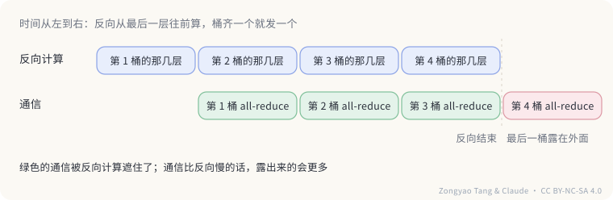

线索是：最简单的并行办法是每张卡放一份模型、各算一部分数据 → 它的通信怎样才能不拖慢训练，答案是分桶和重叠 → 怎么衡量做得好不好，以及做得不好时怎么查 → 最后看它的天花板在哪，引出下一单元。这一单元把第 6 部分的 all-reduce 和第 2 部分的 autograd 接在了一起，也是你排查多卡性能时最常面对的场景。
第 7 部分 · 分布式训练7.1 数据并行 DDP
这一单元回答怎样让 N 张卡训练得接近 N 倍快？
承接 6.1：用 all-reduce 搭出最常用的并行方式。
讲解
1数据并行：每张卡一份完整模型，各吃一部分数据
每张卡用不同的数据做前向和反向，再用 all-reduce 把梯度取平均。所有卡用同样的梯度做同样的更新，模型副本始终保持一致。
启动 N 个进程，每个进程管一张卡。每一步训练：
- 每个进程从数据集里取不同的一个 batch（由分布式采样器保证不重复）。
- 各自做前向和反向，算出各自的梯度。
- 用 all-reduce 把 N 份梯度求和再除以 N，于是每个进程都拿到了同一份“平均梯度”。
- 各自用这份梯度更新参数。
因为初始参数相同（启动时广播过），每一步用的梯度也相同，所以 N 份模型始终保持一致，不需要另外同步参数。
为什么等价于大 batch。 一个 batch 的梯度本来就是其中每个样本梯度的平均。N 张卡各算 B 个样本再取平均，和一张卡算 N×B 个样本，数学上是同一个梯度。所以数据并行没有改变训练算法，只是把一个大 batch 的计算摊给了 N 张卡。
由此带来一个容易忽略的后果：卡数从 1 变成 8，如果每张卡的 batch 不变，有效 batch 就变成了 8 倍。学习率、预热步数这些和 batch 大小相关的超参数可能要跟着调（1.3）。反过来，如果想保持训练行为不变，就把每张卡的 batch 缩小到八分之一，但那样每张卡可能吃不饱。
在 PyTorch 里。 用
DistributedDataParallel把模型包一层，其余的训练代码几乎不用改。它做的事情只有两件：前向时原样调用你的模型；反向时在合适的时机发起 all-reduce。“合适的时机”是这个单元的重点，见下一节。和它名字相近的
DataParallel是另一种早期的做法（一个进程、多个线程、每步把模型复制到各卡），受 GIL 限制，已经不推荐使用。打个比方像几个厨师按同一本菜谱各做一批菜，最后汇总所有人的意见，统一修改菜谱。
所以 DDP 在数学上等价于用 N 倍的 batch 训练；卡数变化时，学习率等超参数可能需要相应调整。
出处Accelerate 同步与 all-reduceAccelerate DistributedDataParallelDDP 论文 第 3 页 §3 系统设计DDP 论文 第 4 页 §3.1 接口- 最直接的做法是反向全部算完，再把所有梯度做一次 all-reduce。这样通信和计算是一前一后的，通信的时间完全加在了每一步上。
2梯度分桶：一边反向，一边通信
反向传播从最后一层往前算，梯度是一批批产生的。DDP 把梯度分到若干个桶里，一个桶装满就立刻发起 all-reduce，和前面层的反向计算同时进行。
DDP 的论文把设计空间讲得很清楚，可以看成两个极端之间的折中。
极端一：每个参数张量单独同步。 反向传播每算出一个张量的梯度，就立刻对它做 all-reduce。好处是通信开始得最早。坏处是次数太多：一个模型有几百个参数张量，其中很多很小。6.1 讲过，每次集合通信都有固定延迟，几百次小通信的时间几乎全花在延迟上。
极端二：全部算完再同步一次。 只付一次固定延迟，但通信必须等反向结束才开始，两者完全不重叠。
折中：分桶。 把参数张量按顺序装进若干个桶，每个桶攒到一定大小（默认 25 MB）。一个桶里所有张量的梯度都算好了，就对这个桶发起一次 all-reduce。于是：
- 通信次数从几百次降到十几、几十次，固定延迟被摊薄。
- 第一个桶就绪时反向才刚开始，它的 all-reduce 和后面各层的反向计算同时进行。

通信和反向在时间上叠在一起 桶的顺序很关键。 反向传播是从最后一层往第一层算的，所以最先就绪的是靠近输出的那些参数。DDP 按参数注册顺序的逆序来装桶，这样桶就绪的顺序和反向的顺序大体一致：反向每推进一段，就有一个桶可以发出去。如果装桶的顺序和梯度就绪的顺序对不上（比如一个桶里混着最后一层和第一层的参数），这个桶要等到反向快结束才能发，重叠就落空了。所以新一些的版本会在第一步之后，按实际观察到的就绪顺序重新排一次桶。
桶的大小是一个可调的旋钮（
bucket_cap_mb）：- 太小：退回极端一，固定延迟的总和变大。
- 太大：退回极端二，重叠变少；而且一次通信占用链路的时间更长。
论文的测量显示，合适的桶大小能带来成倍的差别，而最优值取决于模型和网络。
怎么做到“一就绪就发”。 DDP 在每个参数的梯度上挂了一个钩子（autograd hook）。2.2 会讲，autograd 引擎每算完一个梯度就会调用挂在上面的钩子。钩子里做的事很简单：把这个参数标记为就绪；如果它所在的桶因此全部就绪，并且前面的桶都已经发出，就发起这个桶的 all-reduce。发起是异步的，钩子立刻返回，反向继续往前算。反向全部结束后，DDP 等所有的 all-reduce 完成，再把结果写回各个参数的梯度。
这里同时用到了 0.1 的两个思想：成批处理（分桶）和用别的活把等待填满（重叠）。
源码导读：DDP 的梯度同步在哪里
DDP 的代码分成 Python 和 C++ 两层。文件路径是 PyTorch 2.x 的，读的时候以你手头的版本为准。
Python 层：
torch/nn/parallel/distributed.py。DistributedDataParallel类在这里。值得看的只有两处：- 构造函数：收集模型的参数，调用 C++ 的函数算出“哪些参数装进哪个桶”，然后创建 C++ 的
Reducer对象。构造函数的参数（bucket_cap_mb、find_unused_parameters等）都在这里被用到。 forward：调用你的模型之前，通知 Reducer“新的一步开始了”；之后原样返回模型的输出。
C++ 层：
torch/csrc/distributed/c10d/reducer.cpp。 真正的逻辑在Reducer类里。按一步训练的时间顺序读：- 构造时：给每个参数的梯度累加节点注册钩子。
autograd_hook：某个参数的梯度算好时被调用。它调用mark_variable_ready。mark_variable_ready：把梯度拷进桶的缓冲区，桶的“待就绪”计数减一。减到零就调用mark_bucket_ready。mark_bucket_ready：按顺序把所有已经就绪的桶发出去，对每个桶调用all_reduce_bucket。all_reduce_bucket：调用进程组的allreduce，拿到一个代表“这次异步操作”的句柄，存起来。finalize_backward：反向全部结束后被调用。等所有句柄完成，把桶里的结果除以进程数，写回每个参数的.grad。
再往下：
ProcessGroupNCCL.cpp（同一个目录）。allreduce在这里变成对 NCCL 的调用。它把 NCCL 的调用放在一条单独的 CUDA stream 上，所以不会堵住反向计算用的那条 stream（3.6 会讲 stream）。读的时候带着三个问题：
- 如果某个参数这一步没有参与计算（比如模型里有条件分支），它的钩子不会被调用，它所在的桶就永远等不齐。DDP 怎么处理？（这就是
find_unused_parameters的用途：前向之后遍历计算图，把没用到的参数直接标记为就绪。遍历本身有开销，所以默认关闭。） - 梯度累积时不想每一步都同步，怎么办？（
no_sync上下文：在里面钩子不生效，梯度只在本地累加，出了上下文的第一次反向再一起同步。） - 桶的缓冲区是每一步新分配的吗？（不是，构造时分配好，反复使用。）
打个比方像装车发货：前面的货一装满一车就先发走，不用等全部打包完。
所以理想情况下，通信几乎被反向计算藏住了；模型很小或网络很慢时藏不住，多卡的扩展效率就会下降。
后面会用到 扩展效率：多卡吞吐 ÷（单卡吞吐 × 卡数）出处DDP 论文 第 4 页 §3.2 梯度同步的两个极端DDP 论文 第 5 页 分桶、钩子与装桶顺序DDP 论文 第 7 页 可调的参数- 分桶和重叠做得好不好，需要一个数字来衡量。
3扩展效率：多卡吞吐 ÷（单卡吞吐 × 卡数）
理想情况下 N 张卡就是 N 倍吞吐，实际总会打折：通信藏不住的部分、最慢那张卡拖住大家的同步等待、每张卡分到的 batch 变小导致利用率下降。
扩展效率 = N 张卡的总吞吐 ÷（1 张卡的吞吐 × N）。
测的时候要保证可比：每张卡的 batch 大小和单卡基线相同（这叫弱扩展）。这样理想情况下每张卡干的活和单卡时一模一样，总吞吐应该正好是 N 倍。
实际低于 1 的原因，可以对着 0.1 的四种“等”来分：
一、通信没有被藏住（等别的卡）。 理想情况下所有桶的 all-reduce 都在反向期间完成。实际上最后几个桶是在反向快结束时才就绪的，它们的通信一定会露在外面；如果通信比反向慢，露出来的就更多。可以估算一下：梯度的总字节数 ÷ 6.3 里测出的 algbw，就是一步的通信时间。把它和一步的反向时间比：远小于反向时间，通信基本藏得住；接近或超过，就藏不住。
所以同样的网络，大模型反而更容易扩展得好：反向时间长，有足够的计算去遮盖通信。小模型、跨机、慢网络是最难的组合。
二、等最慢的那个进程（等别的卡）。 同步训练里，all-reduce 要所有进程都到齐才能完成。任何一个进程慢了，其余的都在等。6.3 讲过，这种“慢”的原因往往和通信无关。
三、数据供给跟不上（等数据）。 单卡时数据加载够用，不代表 8 卡时够用：8 个进程各有自己的一组 worker，它们加起来可能超过了 CPU 的核数，或者把存储的读取能力用到了头。
四、通信和计算争抢 GPU（等计算）。 NCCL 的通道要占用 SM（6.2）。通信和反向重叠时，反向能用的计算资源变少了。所以即使通信完全“藏”在了反向里，反向本身也会慢一点。
怎么看。 把卡数从 1 逐步加到 2、4、8（先在一台机器内），再到 16、32（跨机），每一级记下效率：
- 机内就开始下降：先怀疑第三类和第四类，其次是机内通信的路没走对（6.3）。
- 机内很好、一跨机就掉：通信带宽的落差（5.1）让通信藏不住了，或者跨机的路没走对。
- 规模越大越差：网络的选路和拥塞（5.3），或者越来越容易碰上慢节点。
排查：8 卡的扩展效率只有六成，怎么找原因
假设单卡每秒 1000 个样本，8 卡总共只有 4800，效率 60%。按下面的顺序做，每一步都能排除或确认一类原因。
第一步：确认基线是可比的。 单卡和多卡用的是同样的每卡 batch、同样的精度和编译设置吗？单卡基线是在同一台机器、同一张卡上测的吗？
第二步：把通信拿掉。 让 8 个进程各自独立训练，不做梯度同步（比如每个进程单独跑一份单卡脚本，绑定到各自的卡）。
- 每个进程仍然只有 600 上下：问题和通信无关。8 个进程在抢别的资源，最常见的是 CPU 和存储。看 CPU 是否占满；把每个进程的 DataLoader worker 数减半试试；或者用固定的一个 batch 反复喂，彻底排除数据加载。
- 每个进程都回到了 1000：问题在同步这一环，继续往下。
第三步：估算通信该花多久。 梯度总大小 = 参数个数 × 每个梯度的字节数。用 6.3 的方法测出这 8 张卡的 algbw，相除得到一步的通信时间。和一步的反向时间比较。
- 通信时间远小于反向时间，效率却很差：通信没有重叠起来，或者在等慢节点。看第四、五步。
- 通信时间本来就接近反向时间：通信太慢。回到 6.3，查路有没有走对、带宽是否达到预期。
第四步：看时间线。 用
torch.profiler采几步，在时间线上找 NCCL 的 all-reduce（它们在单独的一条 stream 上）。- all-reduce 的色块和反向的 kernel 在时间上是重叠的：重叠在起作用。
- 反向结束后有一长段只有 all-reduce、没有计算：这就是露在外面的通信。试着调整
bucket_cap_mb（比如 25 改成 50 或 100，或者改小）看这一段的变化。 - 第一个桶很晚才发出：装桶顺序和梯度就绪顺序不一致。检查是否开了
find_unused_parameters，模型里有没有每一步都不参与计算的参数。
第五步：找慢节点。 给每个进程记录每一步里“等待同步”的时间。所有进程的每步总时间相同，但等待时间不同：等得最少的那个进程，就是大家在等的。去看它为什么慢：它的数据加载、它的 CPU 核是不是被别人占了、它那张卡的温度和频率（
nvidia-smi -q里有降频的信息）。第六步：几个容易漏掉的同步点。 训练循环里每一步都调用
.item()或打印损失；只在 0 号进程上做的日志、评估和存检查点（其余进程会在下一个同步点等它）；同步的批归一化（每一层多一次集合通信）。每做一步都记下数字。最后你应该能把“丢掉的四成”拆成几项：通信露出多少、等慢节点多少、数据多少。
打个比方像多人合作搬家：人多了效率会提高，但也多了协调和等人的时间。
所以加卡之前先测扩展效率，从 1 卡到 2 卡、4 卡逐步看效率掉在哪里，判断瓶颈是通信、同步等待还是数据加载。
- 假设通信完全藏住了，效率接近 1。数据并行还有一个靠加卡解决不了的问题。
4DDP 的代价：每张卡都存一整份模型和优化器状态
数据并行只分数据，不分模型。卡再多，每张卡上的参数、梯度、优化器状态一点也没少。
数据并行切分的是数据。每张卡上仍然有：
- 一整份参数；
- 一整份梯度；
- 一整份优化器状态；
- 自己那个 batch 产生的激活值。
加卡只是让更多的数据被同时处理，上面前三项一个字节都不会少。所以模型一旦大到这三项加起来超过单卡显存，卡再多也没用。
能做的缓解都很有限：把每张卡的 batch 调到很小（激活值少了，但前三项不变）；用梯度累积补回有效 batch（更慢）；对激活值用重算换显存（activation checkpointing）。它们都不触及根本：那三项是和模型大小成正比的。
换个角度看这个问题：8 张卡上存着 8 份一模一样的参数和优化器状态。同样的东西存了 8 遍，这是纯粹的冗余。下一单元的出发点就是这句话：既然大家存的都一样，那每张卡只存八分之一行不行？
打个比方像每个分店都要备一整套设备：开再多分店，每家店的设备开销一分不少。
所以模型大到一张卡放不下时，DDP 就无能为力了，这正是 ZeRO 和 FSDP（7.2）要解决的问题。
后面会用到 ZeRO：把冗余切开，每张卡只管 1/N出处ZeRO 论文 第 2 页 数据并行的显存冗余
串起来
数据并行让每张卡各算一部分数据，再用 all-reduce 平均梯度。为了不让通信拖慢训练，DDP 把梯度分桶，一个桶就绪就发，和还没做完的反向计算重叠。做得好不好看扩展效率，它掉下来的原因不外乎通信藏不住、等慢节点、数据供不上。DDP 的天花板是显存：每张卡都存着一整份模型和优化器状态。
考考自己
不看讲解，用自己的话讲一遍。
- 数据并行是怎样工作的？为什么说它等价于用 N 倍的 batch 训练？
- DDP 为什么要把梯度分桶？桶的大小太小或太大各有什么问题？
- 什么是扩展效率？它低于 1 的原因有哪几类？
- 数据并行为什么不能用来训练一张卡放不下的模型？
术语
- data parallelism
- 数据并行
- gradient bucketing
- 梯度分桶
- scaling efficiency
- 扩展效率